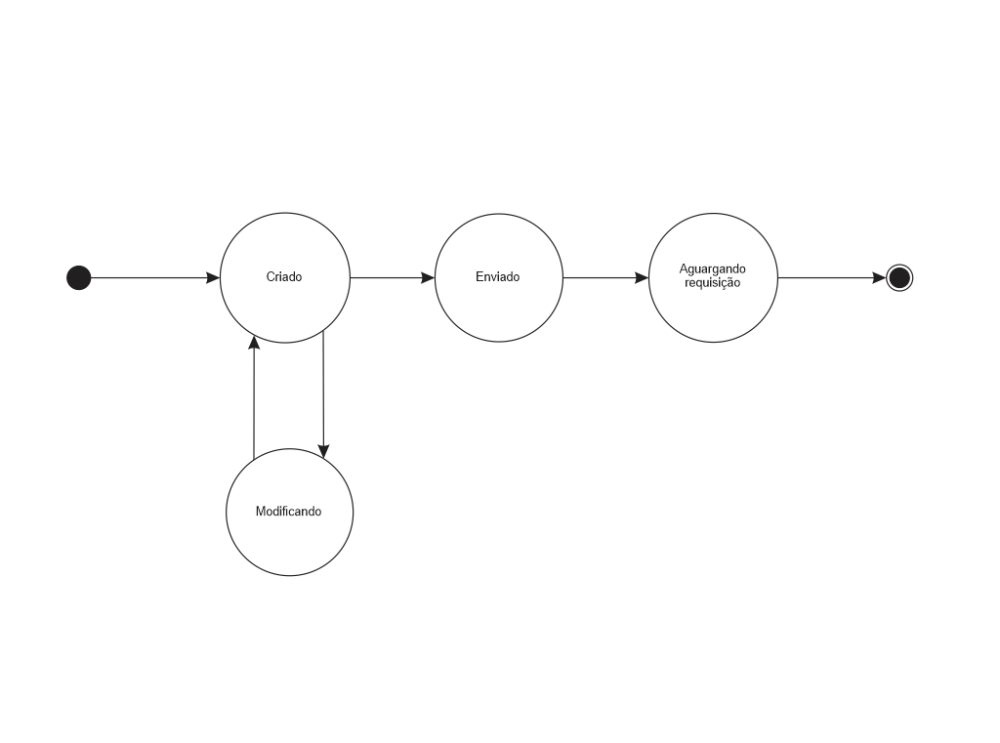

Documentação arquitetural do Insomnia
Este é um documento explica aspectos da arquitetura de um cliente para requisições à API’s. O Insomnia torna a tarefa de teste de Api’s mais fáceis.
Autores
Este documento foi produzido por Filipe Pires Guimarães.
- Matrícula: 116210442
- Contato: filipepiresg@gmail.com
- Projeto documentado: https://github.com/Kong/insomnia
Descrição Arquitetural – Insomnia
Este documento descreve parte da arquitetura do projeto Insomnia. Essa descrição foi baseada principalmente no modelo C4.
É importante destacar que não será escrita toda a arquitetura do Insomnia. O foco principal é descrever a API client utilizando o padrão REST de um ùnico workspace, que é parte fundamental do projeto. A organização utiliza um padrão de arquitetura monolíto.
Descrição Geral sobre o Insomnia
O Insomnia é uma ferramenta open-source e cross-platform para desktop, feito em electron para testar requisições à APIs com suporte à protocolos, como: REST, SOAP, GraphQL e GRPC. De uma forma muito fácil e àgil. Nele,podem ter vários workspaces, com distintas API`s.
Mais detalhes podem ser vistos nesse link
Insomnia Client
Objetivo Geral
Implementar uma ferramenta em que possa testar mais facilmente, e agilmente, às API’s.
Objetivos Específicos
O Insomnia é um projeto que tem como objetivo “facilitar o teste de requisições às API’s”, nele pode-se simular uma requisição completa, observar sua execução e verificar o seu retorno. Ele permite o compartilhamento do workspace com o time, acelerando, mais ainda, esse processo.
Contexto
Abaixo, é possível observar o diagrama de contexto do sistema.

Ao baixar a ferramenta, é possível o usuário criar requisições de todos os tipos (GET, POST, PUT, DELETE, PATCH, OPTIONS, TRACE e CONNECT, que são todos os tipos de métodos para requisições suportados pelo padrão HTTP). Além disso, é possível o envio de diversos tipos de body pela requisição. como: Multipart Form, GraphQL Query, JSON, XML, e outras. E também é possível utilizar padrões de autenticação já pre-definidos ou fazer sobrecarga dos cabeçalhos. Após a criação da requisição, o mesmo é enviado para a API destino, no qual é processado e retornado a requisição é exibida para o usuário em tela, além de ser salva no banco de dados da ferramenta, para posterior visualização e/ou compartilhamento.
Containers
Abaixo, observamos o diagrama de container para a plataforma Insomnia Client:

Vamos detalhar cada container e seu papel no sistema:
- SinglePage Application: Esse é o container de exibição dos dados fornecidos para o usuário, feito atualmente em Electron utilizando typescript, é nele que é feito a criação das requisições e realizado o envio dos mesmos para a API em teste, também é possível visualizar respostas à requisições feitas aquele mesmo
endpoint; - API Application: Nesse container é feito a validação do corpo da requisição, da resposta e até mesmo dos padrões de autenticação, como o Basic Token, entre outros. Ele também é responsável pelo envio destes dados para persistir no database da aplicação. Utilizado NodeJS com typescript;
- Databse: Armazena informações das requisições criadas, feitas e/ou enviadas, e também dos retornos obtidos de cada requisição.
Componentes
Abaixo, é possível observar o diagrama de componentes do sistema:

Nos componentes, temos:
- Database Controller: Esse componente faz o controle sobre o database, fazendo a persistência dos dados e criação/atualização dos dados no mesmo;
- Request Validator: Esse componente faz a validação das requisições para o padrão selecionado, como por exemplo o body, se foi utilizado JSON, que é um padrão de notação de objetos, onde deve-se seguir algumas ‘regras’, como o nome das propriedades desse objeto devem ser
string, entre outros; - Response Validator: Esse módulo é responsável por validar as respostas vindas, ou não, da API em testes. Ele utiliza o padrão de respostas de status das requisiçoes HTTP baseado em REST, onde cada status tem sua característica “única”;
- Axios: Esse módulo utiliza uma biblioteca externa para fazer as requisiçoes a API em teste, facilitando o processamento de envio das requisiçoes. Aqui no blog já foi feito um post sobre ela e pode ser lido mais aqui.
Código
Nesta etapa não faremos diagramas que apresentam detalhes da implementação. Faremos isso mais adiante.
Visão de informação
Temos um fluxo de estados bem simples, onde a requisição é criada, e ao longo do processo será modificada quando tiver alteração do endpoint, do body, dos cabeçalhos, entre outros. Em seguida, é enviada para a API em teste e é passada para aguardando resposta, após o retorno, ou não tiver, dessa resposta, ela entra no seu estado final, exibindo para o usuário a resposta, com algumas métricas, que pessoalmente acho bem interessante para o teste da API, como o tempo de resposta e o tamanho da resposta. Após essa interação, é feita a atualização no banco de dados.
